线性表把一串同类型元素排成唯一的先后次序。顺序表把元素连续放在数组里，能 O(1) 按下标访问； 链表用链接保存相邻关系，能在已知结点位置 O(1) 插入或删除。关键是区分「按位置找元素」和 「已知结点后改链接」这两类操作。
源码：顺序表·教学版、 顺序表·工程版、 顺序表示例、 链表·教学版、 链表·工程版、 链表示例、 双链表·教学版、 双链表·工程版。
#先跑一遍
// 第 2 章「先跑一遍」：用教学版 ArrayList 走一遍 append / insert / find / remove。
// 编译运行：
// g++ -std=c++17 -I code/ch02/array_list code/ch02/array_list/demo.cpp -o demo && ./demo
#include "teaching.hpp"
#include <iostream>
int main() {
ArrayList<int> values;
values.append(10);
values.append(30);
values.insert(1, 20);
std::cout << "顺序表:";
for (int value : values) { // 有 begin()/end()，range-for 直接可用
std::cout << ' ' << value;
}
// find 返回 optional：有值才解引用
if (auto pos = values.find(20)) {
std::cout << "\n查找 20 的下标: " << *pos << '\n';
}
std::cout << "删除位置 1 得到 " << values.remove(1) << "，剩余:";
for (int value : values) {
std::cout << ' ' << value;
}
std::cout << '\n';
}c++ -std=c++17 -Wall -Wextra -Werror -Icode/ch02/array_list \
code/ch02/array_list/demo.cpp -o /tmp/list-demo
/tmp/list-demo顺序表: 10 20 30
查找 20 的下标: 1
删除位置 1 得到 20，剩余: 10 30insert(1, 20) 要把后面的元素右移一位，这是顺序表的固有代价。链表同一组操作只改两条链接，但按位置找前驱仍是 O(n)：
// 第 2 章「先跑一遍」：用教学版 LinkedList 走一遍 append / insert / remove。
// 编译运行：
// g++ -std=c++17 -I code/ch02/linked_list code/ch02/linked_list/demo.cpp -o demo && ./demo
#include "teaching.hpp"
#include <iostream>
int main() {
LinkedList<int> values;
values.append(10);
values.append(30);
values.insert(1, 20);
std::cout << "链表:";
for (int value : values) {
std::cout << ' ' << value;
}
std::cout << "\n删除位置 0 得到 " << values.remove(0) << "，剩余:";
for (int value : values) {
std::cout << ' ' << value;
}
std::cout << "\nappend 之后尾元素是 " << values.at(values.size() - 1) << '\n';
}c++ -std=c++17 -Wall -Wextra -Werror -Icode/ch02/linked_list \
code/ch02/linked_list/demo.cpp -o /tmp/link-demo
/tmp/link-demo链表: 10 20 30
删除位置 0 得到 10，剩余: 20 30
append 之后尾元素是 30append 经尾指针 O(1) 接链，不必再从头走到尾。
本文件的地位：《数据结构与算法》（张铭、王腾蛟、赵海燕，高等教育出版社 2008） 第 2.1–2.2 节的现代化重排。原书正文（
dsa_raw.md:1145起）的讲法、编号、图表一概保留； 换掉的只是那套 2008 年的 C++ 写法。2.3 节链表另开一轮。书里印的每一段 C++ 都来自
code/ch02/array_list/，真正编译、真正跑过 （tools/check_doc.py的 R3 逐字核对）。原书那份写法错在哪、改了什么、 什么刻意没改，逐条记在code/ch02/array_list/legacy.md。代码风格遵循
collab/DECISION_LOG.md的 D-001 与 D-005。
#2.1 线性表的概念
线性表（linear list）是由称为元素（element）的数据项组成的一种有限且有序的序列， 这些元素也可称结点或表目。用第 1 章的二元组 B=(K,R) 写出来就是
结点集合 K 中的元素个数 n 称为线性表的长度：n=0 时称空表，n>0 时称非空表； k0 称开始结点或表首，kn−1 称终止结点或表尾。线性关系 r 刻画元素间的前驱、 后继关系——ki 是 ki+1 的前驱，ki+1 是 ki 的后继，所以线性关系也称前驱关系或 后继关系。关系 r 具有反对称性和传递性；由定义可知线性表的逻辑特征是：K 中的每个 结点在关系 r 上最多只有一个前驱结点和一个后继结点。
线性结构有两个结构特点。均匀性：虽然不同线性表的数据元素可以各种各样，但同一线性表中 的各数据元素必定具有相同的数据类型和长度。有序性：各数据元素在表中都有自己的位置， 元素之间的相对位置是线性的。本章讨论的简单线性表因此约定所有元素同类型——概念上并不反对 元素类型不同（例如第 12 章的广义表），但那属于高级线性结构。
同一种线性结构在不同场合有不同的称谓：顺序表、链表、串、栈、顺序文件；其中的元素也相应地 叫表目、结点或记录。一般情况下这些称谓可作为同义词互通使用。
在线性表上可以实施的运算依赖于具体应用，但一般不外乎两大类：一类是对整个表的操作—— 创建或置空一个线性表、合并两个线性表、判断表是否为空或为满；另一类是对表中元素的操作 ——查找满足一定条件的元素、在表中插入或删除指定的元素。
按照特性，线性表的运算还可以细分为 5 类：① 创建线性表的一个实例；② 析构，消除实例并释放 所占空间；③ 获取当前线性表的信息（由内容寻找位置、由位置读取元素内容），不改变表的内容； ④ 访问并改变表的内容或结构，例如更新指定元素、添加元素、删除元素、清空线性表； ⑤ 辅助管理操作，例如求表的当前长度。
原书【代码2.1】用一个类模板 List<T> 来写这组运算。那份清单有两处今天必须改：
- 它声明了
bool delete(const int p);——delete是 C++ 关键字，不能作函数名。 整章的删除操作都建立在这个编译不过的名字上。 - 它写的是
class List { void clear(); ... };，通篇没有public:。class的默认访问权限是 private，于是这个抽象数据类型的每一个运算都调不到。 （同一本书第 3 章的代码3.1 是写了public:的。）
第 2 点尤其值得停一下：抽象数据类型的意义就是对外给出一组运算。 一个所有运算都私有的 ADT，在语法上成立、在语义上是空的。
原书在【代码2.1】之外还给出一组「当前位置（position）」运算：setPos 设置当前下标， setStart / setEnd 把当前下标移到表头或表尾，prev / next 让它左右移动一位；配合 getValue 就能依次处理每个元素。本书用迭代器（begin() / end() 加 range-for）达到同一 目的——「先跑一遍」那段 for (int value : values) 就是原书那段 setStart / next 循环的现代写法，好处是不必在容器里额外存一个「当前位置」状态。
线性表运算的具体实现与它在计算机中的物理存储结构密切相关，效率也与存储结构相关。 线性表的存储结构本质上是逻辑结构到存储空间的映射：不仅要为结点集合到存储器单元建立 一个映射，同时还要为元素之间的线性关系到相应存储单元地址间的关系建立映射。主要有两类：
- 定长的顺序存储结构，简称顺序表。程序中通过创建数组来建立，为线性表分配一块连续的 存储空间，元素顺序地存储在这些地址连续的空间中，以「物理位置相邻」来表示元素之间的关系。 定长存储结构的不足之处是限制了线性表的长度变化。见 2.2 节。
- 变长的线性存储结构，也称链接式存储结构，简称链表。它使用指针来表示元素之间的线性 关系，利用前驱和后继关系将各个元素用指针链接起来；对表长不加限制，需要加入新元素时可以 方便地申请空间并链接到合适的位置上。见 2.3 节。
本书把这组运算直接定义在 ArrayList<T> 上，不再另设一个基类—— 理由与第 3 章相同：那样的空基类给不了多态，却会带来非虚析构的未定义行为。 要定下来的是这张表：
| 运算 | 含义 | 时间代价 |
|---|---|---|
at(i) / set(i, x) |
按下标取值、改值 | O(1) |
find(x) |
按内容查位置；找不到返回「没有」 | O(n) |
insert(i, x) |
在位置 i 插入 | O(n) |
append(x) |
在表尾追加 | 摊还 O(1) |
remove(i) |
删除位置 i 上的元素并把它带回来 | O(n) |
size() / empty() / clear() |
长度、判空、置空 | O(1) |
#2.2 顺序表
#为什么这一节没有 Python 版
这里故意只给 C++。顺序表的重点不是“把几个值放进一个序列”，而是容量、对象生命周期和扩容失败时旧数组是否仍然有效。若直接写成 Python list，扩容、元素搬迁和析构都由解释器隐藏；读者得到的是一个可用的容器，却看不到三法则、移动语义和强异常保证为何存在。算法侧可以把同一思想用 Python 重讲，存储侧若也用 list，反而会把本节要教的课删掉。
按顺序方式存储的线性表称为顺序表(array-based list)，又称向量(vector)，通过数组建立。
假设每个元素占用 L 个存储单元，顺序表的开始结点 k₀ 的存储位置记为 b = loc(k₀)，称为首地址；则下标为 i 的元素 kᵢ 的存储位置为
每个元素的存储位置都与起始位置相差一个与位序成正比的常数。只要确定了基地址， 表中任一元素的地址都能直接算出——顺序表因此是一种随机存取的存储结构， 按下标取值的时间代价为 O(1)。物理相邻表示了逻辑相邻。
(a) 线性表的逻辑结构
| 数据元素 | k₀ | k₁ | … | kᵢ | … | kₙ₋₁ | … | |
|---|---|---|---|---|---|---|---|---|
| 逻辑地址 | 0 | 1 | … | i | … | n−1 | … | maxSize−1 |
(b) 线性表的顺序存储结构
| 数据元素 | k₀ | k₁ | … | kᵢ | … | kₙ₋₁ | … |
|---|---|---|---|---|---|---|---|
| 存储地址 | b | b+L | … | b+i·L | … | b+(n−1)·L | … |
图 2.1 顺序表的示意图
#教学版：完整实现
下面是一份完整的、能直接编译运行的顺序表。一个文件、一个类，没有省略号。 它保留原书【代码2.2】【算法2.3】【算法2.4】【算法2.5】要教的全部内容—— 连续存储、按下标 O(1) 随机存取、插入/删除要搬 O(n) 个元素——只把原书那几处 编译不过或会崩的写法换掉。后面 2.2.1、2.2.2 两节就是把它拆开逐段讲——检索、插入、删除都在 2.2.2 里。
// 顺序表 ArrayList —— 教学版。
//
// 一个文件、一个类、能直接编译运行，给「第一次读这一节」的人看。
// 它保留原书【代码2.1】【代码2.2】【算法2.3】【算法2.4】【算法2.5】要教的全部内容——
// 连续存储、按下标 O(1) 随机存取、插入/删除要搬 O(n) 个元素——
// 只把原书那几处编译不过或会崩的写法换掉。
//
// 与 modern.hpp（工程版）的分工：
// 教学版 遵守**三法则**（析构 + 拷贝构造 + 拷贝赋值），正确，但拷贝多一点；
// 工程版 在此之上补齐移动语义、强异常保证、编译期类型约束。
// 两份都在闸门里真编译真运行。先读这一份，2.2a「进阶（选读）」再读那一份。
#pragma once
#include <cstddef>
#include <optional>
#include <stdexcept>
template <typename T>
class ArrayList {
public:
using value_type = T;
using size_type = std::size_t;
explicit ArrayList(size_type initial_capacity = 8)
: data_(new T[initial_capacity]), capacity_(initial_capacity), size_(0) {}
~ArrayList() { delete[] data_; }
// 三法则：自己管着 new 出来的数组，就得自己写拷贝构造和拷贝赋值。
// 不写的话编译器会照抄指针，两个表指向同一块内存，各析构一次 → 二次释放。
ArrayList(const ArrayList& other)
: data_(new T[other.capacity_]), capacity_(other.capacity_), size_(other.size_) {
for (size_type i = 0; i < size_; ++i) {
data_[i] = other.data_[i];
}
}
ArrayList& operator=(const ArrayList& other) {
if (this == &other) {
return *this;
}
T* fresh = new T[other.capacity_];
for (size_type i = 0; i < other.size_; ++i) {
fresh[i] = other.data_[i];
}
delete[] data_;
data_ = fresh;
capacity_ = other.capacity_;
size_ = other.size_;
return *this;
}
bool empty() const { return size_ == 0; }
size_type size() const { return size_; }
size_type capacity() const { return capacity_; }
// 清空只把长度归零，已经申请的数组留着复用。
void clear() { size_ = 0; }
// 按下标读取，O(1)——这是顺序表相对链表的看家本领。
// 下标非法是**调用方的错误**，不是可预期状态，所以抛异常而不是返回 optional。
const T& at(size_type index) const {
if (index >= size_) {
throw std::out_of_range("ArrayList::at: 下标越界");
}
return data_[index];
}
T& at(size_type index) {
if (index >= size_) {
throw std::out_of_range("ArrayList::at: 下标越界");
}
return data_[index];
}
void set(size_type index, const T& value) {
if (index >= size_) {
throw std::out_of_range("ArrayList::set: 下标越界");
}
data_[index] = value;
}
// 按内容查找，O(n)。找到返回下标，没找到返回空 optional。
// 原书【算法2.3】用 `bool getPos(int& p, const T value)`：忘了看返回值，
// 就会读到一个从没被写过的 p。这里「找没找到」是返回值类型的一部分。
std::optional<size_type> find(const T& value) const {
for (size_type i = 0; i < size_; ++i) {
if (data_[i] == value) {
return i;
}
}
return std::nullopt;
}
// 在位置 pos 插入，pos 可以等于 size()（追加到表尾）。
// 代价 O(n)：pos 之后的元素都要右移一位。这正是顺序表与链表要对比的地方。
void insert(size_type pos, const T& value) {
if (pos > size_) {
throw std::out_of_range("ArrayList::insert: 插入位置非法");
}
if (size_ == capacity_) {
grow();
}
for (size_type i = size_; i > pos; --i) {
data_[i] = data_[i - 1]; // 从后往前搬，否则会自己覆盖自己
}
data_[pos] = value;
++size_;
}
void append(const T& value) { insert(size_, value); }
// 删除 pos 上的元素并返回它。代价同样是 O(n)：后面的元素都要左移一位。
T remove(size_type pos) {
if (pos >= size_) {
throw std::out_of_range("ArrayList::remove: 下标越界");
}
T removed = data_[pos];
for (size_type i = pos; i + 1 < size_; ++i) {
data_[i] = data_[i + 1];
}
--size_;
return removed;
}
// 有了 begin/end，range-for 就能用了：for (auto& x : list) { ... }
//
// 原书是在类里放一个 `int position` 游标，配 setPos/next/prev 来依次处理元素。
// 那种设计把「遍历到哪了」这个状态塞进了容器：const 对象没法遍历，
// 两处代码不能同时遍历，嵌套遍历直接互相踩。游标挪到容器外面，这些问题一起消失。
T* begin() { return data_; }
T* end() { return data_ + size_; }
const T* begin() const { return data_; }
const T* end() const { return data_ + size_; }
private:
// 扩容：申请两倍大的新数组，搬过去，再释放旧的。
// 翻倍而不是加一，才能让 append 的摊还代价保持 O(1)。
void grow() {
size_type next = (capacity_ == 0) ? 1 : capacity_ * 2;
T* fresh = new T[next];
for (size_type i = 0; i < size_; ++i) {
fresh[i] = data_[i];
}
delete[] data_; // 先搬完再释放旧的，顺序反了就会读到已释放的内存
data_ = fresh;
capacity_ = next;
}
T* data_; // 指向底层数组
size_type capacity_; // 数组能放多少个
size_type size_; // 现在放了几个
};编译运行：
g++ -std=c++17 -Wall -Wextra demo.cpp -o demo && ./demo#2.2.1 顺序表的类定义
原书【代码2.2】用四个成员表示顺序表：T* aList、int maxSize、int curLen、 int position。前三个对应缓冲区、容量、当前长度，教学版一一对应 （改用 std::size_t，因为「负下标」不该在类型层面存在）。
第四个 position 是个当前处理位置游标，配合正文提到的 setPos / setStart / next / prev 用来「依次处理元素」。这个设计今天不能要： 遍历状态一旦住进容器，const 对象就没法遍历（游标要改），两处代码不能同时遍历， 嵌套遍历直接互相踩。本书删掉这个成员，改为提供 begin()/end()， 把遍历状态交回调用方——range-for 因此可以直接用在顺序表上。 （顺带一提：原书那个 position，在书中展示的所有算法里一次都没被用到。）
缓冲区是裸指针。于是这个类自己管着资源，就必须遵守三法则： 一个类只要写了析构函数、拷贝构造、拷贝赋值中的任意一个，通常这三个都得写。 理由很直白——你之所以要写析构函数，是因为你在管资源；既然在管资源， 编译器那份「逐成员照抄」的拷贝就一定是错的：照抄一个指针成员的结果是 两个对象指向同一块内存，各自析构时各释放一次，同一块内存被释放两次。
原书 arrList 正是如此：有析构函数，却没有拷贝构造与拷贝赋值。一句普通的 arrList<int> b = a; 就会二次释放——与第 3 章 arrStack 是同一个错误，同一份 ASan 报告可以复现。
这里用裸指针而不是 std::unique_ptr<T[]>，是因为顺序表的存储管理正是本节的教学内容： 用智能指针时这几个函数编译器生成的就够用，学生看不到它们为什么必须存在。判据见 2.3.1 节的「所有权工具怎么选」。
另外原书的 clear() 是这样写的：
void clear() { delete [] aList; curLen = position = 0; aList = new T[maxSize]; }释放整块再重新分配。既没必要（把长度归零即可，容量留着复用），也不是异常安全的： 若 new 抛异常，对象就停在「指针已释放、长度已归零」的破碎状态， 之后析构还会再 delete[] 一次。教学版的 clear() 只把长度归零，一行。
#2.2.2 顺序表的运算实现
#顺序表的检索
顺序表上的检索分按位置和按内容两类。按位置的检索直接由地址公式算出，O(1)—— 就是上面 at() 和 set() 那几行：先查下标合不合法，然后直接 data_[index]， 没有循环。原书的 getValue 用「出参 + bool」，越界时打印一行再返回 false； 教学版把越界当错误处理，抛 std::out_of_range。
按内容的检索是把待查值与表中元素依次比较，O(n)。这里要专门讲一下「没找到」怎么告诉调用方—— 这是全书反复出现的一个问题，第一次遇到值得说透。
原书【算法2.3】的签名是：
bool getPos(int& p, const T value);一次调用要带回两件事：找没找到（函数的返回值 bool），和在第几个位置 （引用参数 p，函数在里面写结果，这种参数习惯上叫「出参」）。找到了就把下标写进 p 并返回 true，没找到就返回 false、p 不动。
用起来是这样：
int p; // 此刻 p 是未初始化的，里面是内存里的残留值
if (list.getPos(p, 20)) { // ← 这一行的判断是必须的
use(p);
}问题就在那句注释上：这个判断没有任何东西强制你写。漏掉它，代码照样编译、照样运行：
int p;
list.getPos(p, 20); // 忘了看返回值
use(p); // ← 用的是一个从没被写过的 pp 里是什么？没找到时 getPos 根本没碰它，所以它还是那块内存原来的残留值——可能是 0， 可能是上一次调用留下的旧下标，也可能是任意数字。程序不会崩，只会默默地按错误的下标继续跑。 这类 bug 极难查，因为出错的地方和崩溃的地方往往隔着很远。
现代写法把这两件事合成一个返回值——就是上面 find() 的 std::optional<size_type>：循环体一模一样，差别只在「没找到」怎么表达。
std::optional<size_type> 可以理解成一个「可能装着下标的盒子」：找到了，盒子里是下标； 没找到，盒子是空的（std::nullopt）。关键在于取值必须先开盒，而开盒这一步绕不过去：
if (auto pos = list.find(20)) { // 先问盒子空不空
use(*pos); // 确认非空后才取值
}对空盒子直接 * 取值是未定义行为，用 .value() 取则会抛 std::bad_optional_access。 两条路都不会像 int p 那样悄悄给你一个看似正常的垃圾值。
工程版还在 find() 上加了一个 [[nodiscard]] 属性，再补一道： 连返回值都丢掉不用，编译器直接报错。
$ g++ -std=c++17 -Wall -Wextra -Wpedantic -Werror …
error: ignoring return value of ‘std::optional<...> dsa::ArrayList<T>::find(const T&) const’,
declared with attribute ‘nodiscard’ [-Werror=unused-result]教学版没有写这个属性——它是纯粹的工程加固，与顺序表这一节要讲的东西无关。
一句话概括这个改动：原来靠调用方自觉，现在靠类型系统和编译器。「找没找到」这件事 从「一个你可以忽略的 bool」变成了「不处理就取不出数据的盒子」。全书凡是「可能没有结果」 的接口——查找、出栈、取队首——都按这条办。
（顺带一提，算法2.3 那段按印刷原样是编译不过的：循环写的是 for (i = 0; i < n; i++)， 而 n 从未声明，按上下文应为 curLen。）
检索的时间代价体现在比较次数上。最好情况是第 1 个元素即为所求，比较 1 次； 最差情况是表中没有该元素，比较 n 次。等概率假设下平均比较次数为
即平均需要检查表中一半的元素，时间开销为 O(n)。
#顺序表的插入
插入要在指定位置腾出一个空位：从表尾起，把 pos 之后的元素逐个右移一位。 教学版 insert() 里那个倒着走的循环就是在做这件事：
for (size_type i = size_; i > pos; --i) {
data_[i] = data_[i - 1];
}方向不能反。若改成从 pos 起递增地 data_[i + 1] = data_[i]， 第一次搬完就把 data_[pos + 1] 覆盖掉了，后面搬的全是同一个值。
两处与原书不同：
- 容量不足时自动翻倍，而不是打印
"The list is overflow"然后返回 false。 扩容策略与第 3 章算法3.3 相同。 - 位置非法抛
std::out_of_range，而不是打印一行再返回 false。 按公约，可预期的空状态用optional，真正的错误抛异常——插到表外是错误。
插入位置 p 处腾空位的过程如下（图 2.2）：p 及其之后的元素整体右移一位， 空出的 p 位置写入新元素。
| aList | k₀ | k₁ | … | value | kₚ | … | kₙ₋₁ | … | |
|---|---|---|---|---|---|---|---|---|---|
| 下标 | 0 | 1 | … | p | p+1 | … | n | … | maxSize−1 |
图 2.2 顺序表元素插入示意图
时间代价仍然是 O(n)。最好情况是插在表尾，移动 0 次；最差情况是插在表头， n 个元素全要移动；等概率假设下平均移动次数为
扩容没有改变这个结论：翻倍带来的搬迁摊还到每次插入是 O(1)， 而元素右移本身仍是 O(n)。
「摊还」是指：单次操作偶尔很贵，但把总代价分摊到所有操作上之后，每次仍然很便宜。 这里绝大多数插入不触发扩容，偶尔一次翻倍要搬走全部 n 个元素；但两次扩容之间至少发生了 n 次插入，把这一次搬迁分摊下去，每次插入平摊仍是 O(1)。注意它说的是平均而不是保证—— 那一次搬迁真的会卡住，对延迟敏感的场合要单独考虑。
这一点是 2.3 节拿顺序表与链表对比的依据，不能被优化掉。
#顺序表的删除
删除是插入的镜像：把 pos 之后的元素逐个左移一位，这次循环正着走。 教学版的 remove() 还多做一件事——先把被删的元素存下来，最后返回给调用方。
空表上删除必然越界，所以不需要原书那句单独的空表检查： 「表空」在这里不是一种可预期状态，而就是下标非法的一个特例。
删除位置 p 上的元素后，其后的元素整体左移一位（图 2.3）：
删除前：
| aList | k₀ | k₁ | k₂ | … | kₚ | … | kₙ₋₁ | … |
|---|---|---|---|---|---|---|---|---|
| 下标 | 0 | 1 | 2 | … | p | … | n−1 | … |
删除后：
| aList | k₀ | k₁ | k₂ | … | kₚ₊₁ | … | kₙ₋₁ | … |
|---|---|---|---|---|---|---|---|---|
| 下标 | 0 | 1 | 2 | … | p | … | n−2 | … |
图 2.3 顺序表元素删除示意图
原书【算法2.5】的函数名是 delete——C++ 关键字，编译不过；本书叫 remove。 另外它返回 bool，被删掉的值就此丢失；这里把它返回给调用方， 「删除并取用」不必先 getValue 再 delete 两步走。
删除的时间代价分析与插入相同，平均为 O(n)。
#2.2a 进阶（选读）：从教学版到工程版
这一节可以整节跳过。 上面那份教学版在分配和 T 的拷贝都不抛异常时是正确的 （元素是 int、std::string 这类东西时就是如此），跑得起来，日常用例下 ASan 也干净。 这一节讲的是把它变成一个工业级容器还要补哪些东西。 等你哪天要写自己的容器时再回来读。工程版在 code/ch02/array_list/modern.hpp，与教学版一样进闸门、一样双档编译运行。
#一、三法则补成五法则：移动语义
教学版把一个临时表赋给别人时，会老老实实深拷贝一遍——而那个临时对象下一行就要销毁， 这次拷贝纯属浪费。工程版补上移动构造与移动赋值：直接把指针「偷」过来， 再把对方置空，O(1) 完事。
/// 在位置 pos 插入元素，pos 可以等于 size()（即追加到表尾）。
/// 位置非法抛 std::out_of_range；容量不足自动翻倍。
///
/// 时间代价仍是 O(n)——pos 之后的元素都要右移一位。这是顺序表的固有代价，
/// 也是第 2.3 节要拿它和链表对比的地方，没有被"优化"掉。
void insert(size_type pos, const T& value) {
make_gap(pos);
data_[pos] = value;
++size_;
}
void insert(size_type pos, T&& value) {
make_gap(pos);
data_[pos] = std::move(value);
++size_;
}
void append(const T& value) { insert(size_, value); }
void append(T&& value) { insert(size_, std::move(value)); }insert 因此有了两个重载：左值走拷贝，右值走 std::move。 append(std::string("很长的字符串")) 于是不再复制那串字符，只搬指针。
#二、扩容中途抛异常：强异常保证
教学版的 grow() 是「申请 → 搬 → 释放旧的」三步。它对 int、std::string 这类元素完全够用，但如果某个元素的拷贝中途抛了异常，新申请的 fresh 就漏掉了。 工程版把这一段包进 try/catch，并保证失败时原表原封不动——这叫强异常保证： 一个操作要么完全成功，要么像没发生过一样。
void ensure_capacity() {
if (size_ < capacity_) {
return;
}
constexpr size_type kMax = std::numeric_limits<size_type>::max();
if (capacity_ > kMax / 2) {
throw std::overflow_error("ArrayList: 容量翻倍会溢出");
}
const size_type next = capacity_ == 0 ? kInitialCapacity : capacity_ * 2;
T* fresh = new T[next];
try {
for (size_type i = 0; i < size_; ++i) {
// 判据同第 3 章（DECISION_LOG D-005）：看的是**移动赋值**抛不抛，
// 不是 std::move_if_noexcept 检查的移动构造。两者可以不同，
// 用错会让搬到一半的失败把原表掏空。
if constexpr (std::is_nothrow_move_assignable<T>::value) {
fresh[i] = std::move(data_[i]);
} else {
fresh[i] = data_[i];
}
}
} catch (...) {
delete[] fresh;
throw;
}
delete[] data_;
data_ = fresh;
capacity_ = next;
}搬迁到底用移动还是拷贝，判据必须落在实际执行的那个操作（移动赋值）上， 而不是惯用的 std::move_if_noexcept（它看的是移动构造）。 这个坑第 3 章 3.1.2a 有完整的复现与解释，此处不重复。
#三、编译期的类型约束
工程版类头上有四条 static_assert，在编译期检查放进来的 T 合不合格： 必须能默认构造（new T[n] 会构造整块槽位）、必须能移动赋值、 不可拷贝的 T 必须能无异常移动赋值、不能是引用类型。
写在类里而不是文档里，是因为编译期报错永远比运行期谜案便宜。 教学版没有它们：T 不合格时报错发生在模板实例化的深处，信息难看，但同样报错。 这是可读性与报错质量之间的一次交换，教学版选了前者。
#四、其它工程细节
| 工程版 | 教学版 | 差在哪 |
|---|---|---|
check_index() / make_gap() 抽成私有辅助函数 |
检查写在每个函数里 | 少一层跳转，读者不必来回翻 |
查询函数标 [[nodiscard]] 与 noexcept |
都不标 | 前者拦住「忘了看返回值」，后者让标准库能查询这个承诺 |
放在 namespace dsa 里 |
无命名空间 | 真实项目要防名字冲突 |
自由函数 swap(a, b) |
无 | ADL 找得到，标准库算法会用 |
#与原书的对照
| 原书 | 现在 | 为什么 |
|---|---|---|
bool delete(const int p) |
T remove(size_type pos) |
delete 是关键字，原样编译不过；顺带把被删元素还给调用方 |
class List { ... } 无 public: |
不设基类，要求写成 static_assert |
所有运算私有的 ADT 在语义上是空的；空基类给不了多态 |
for (i = 0; i < n; i++) |
i < size_ |
原书 n 从未声明，编译不过 |
bool getPos(int& p, T v) |
std::optional<size_type> find(const T&) |
「找没找到」交给类型系统，忽略返回值会告警 |
bool getValue(int p, T& v) |
const T& at(size_type)，越界抛异常 |
同上；越界是错误，不是可预期状态 |
int maxSize / curLen，满了拒绝 |
size_t capacity_ / size_，自动翻倍 |
int 溢出是未定义行为；「负下标」不该存在；容量不该是使用者的负担 |
int position 游标 + next/prev |
begin()/end() |
遍历状态住在容器里，const 不能遍历、不能嵌套遍历 |
cout << "The list is overflow" |
不做任何 I/O | 数据结构不该和标准输出耦合 |
clear() 释放后重新分配 |
clear() noexcept 只归零长度 |
原写法没必要，且 new 抛异常会留下破碎对象 |
刻意没改的：连续存储、按下标 O(1) 随机存取、插入与删除搬动 O(n) 个元素。 这三条正是 2.3 节拿顺序表和链表做对比的全部依据，一条都不能优化掉。
完整实现见 code/ch02/array_list/modern.hpp，测试见同目录 test.cpp （47 项断言，覆盖上表每一行；用 python3 tools/check_code.py 在 -Werror + ASan/UBSan 与 -O2 两种构建下各跑一遍）。
#2.3 链表
#为什么这一节没有 Python 版
链表这一节要看的是结点所有权：谁负责 new 出来的结点、拷贝时是否深复制、异常和析构时怎样沿链释放。Python 的 list 既不是这条链，也不要求读者实现拷贝构造、拷贝赋值、移动构造和析构；即便手写 Python 结点，垃圾回收仍会把所有权边界变得不可观察。因此这里保留 C++ 的裸指针与五法则，Python 版只会成为另一种容器写法。
顺序表用物理相邻表示逻辑相邻，所以按下标读取是 O(1)，但中间插入和删除需要搬动 后续元素。链表把逻辑相邻写进结点的链接域：结点可以散落在内存中；给定一个前驱结点后， 插入或删除只改常数条指针。代价也必须如实保留：要按位置找到那个前驱，仍须从表头循链， 所以按位置访问、查找、插入和删除的总时间仍是 O(n)。
每个结点只存一根指向后继的指针时，叫单链表(singly linked list)。
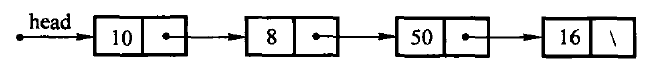
图 2.4 单链表示例。结点分成两部分：data 域存真正的数据（图中的 10、8、50、16），next 域存后继结点的地址。终止结点没有后继，next 是空指针，图里用「\」表示。结点在内存中不必两两相邻——这正是链表能以常数条指针完成插入删除的原因。
访问只能从表头开始顺着 next 走：图 2.4 里 head->next->data 是 8，head->next->next->data 是 50。表越长，这条链越长。为了让「在表尾追加」不必每次走到底，另设一个指向尾结点的变量 tail：
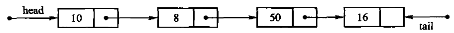
图 2.5 具有头、尾两指针的单链表。有了 tail，append() 是 O(1)。
#教学版：完整实现
下面是一份完整的、能直接编译运行的单链表。一个文件、一个类。 后面 2.3.1、2.3.2 两节就是把它拆开逐段讲。
// 单链表 LinkedList —— 教学版。原书【代码2.6】【代码2.7】【算法2.8】–【算法2.11】。
//
// 一个文件、一个类、能直接编译运行，给「第一次读这一节」的人看。
// 保留链表要教的全部内容：结点分散存储、带头结点、尾指针让 append 保持 O(1)、
// 按位置查找必须循链 O(n)、插入删除在定位之后只改常数条链接。
//
// 与 modern.hpp（工程版）的分工：
// 教学版 三法则（析构 + 拷贝构造 + 拷贝赋值），头结点里放一个不用的 T；
// 工程版 补齐移动语义，并把头结点做成不含 T 的哨兵基类，
// 这样 T 就不必可默认构造——代价是多一层继承和一堆 static_cast。
// 两份都在闸门里真编译真运行。先读这一份，2.3a「进阶（选读）」再读那一份。
#pragma once
#include <cstddef>
#include <optional>
#include <stdexcept>
template <typename T>
class LinkedList {
private:
// 结点(node)：一个数据域，加一根指向后继的链接。原书【代码2.6】。
// 它是实现细节，所以放在 private 里——调用方拿不到指针，就改不坏链。
struct Node {
T value;
Node* next;
};
public:
using value_type = T;
using size_type = std::size_t;
// 头结点(head node)是一个**不存放数据**的哨兵结点，永远排在第一个真元素前面。
// 它的作用是消掉「在表头插入 / 删除表头」这个特例：有了它，任何位置的插入
// 都变成「找到前驱，改它的 next」，一套代码走遍全表。
LinkedList() : head_(new Node), tail_(head_), size_(0) {
head_->next = nullptr;
}
~LinkedList() {
clear();
delete head_; // 头结点是构造时 new 的，最后要还回去
}
// 三法则：这个类管着一串 new 出来的结点，拷贝必须自己写。
LinkedList(const LinkedList& other) : head_(new Node), tail_(head_), size_(0) {
head_->next = nullptr;
for (Node* source = other.head_->next; source != nullptr; source = source->next) {
append(source->value);
}
}
LinkedList& operator=(const LinkedList& other) {
if (this == &other) {
return *this;
}
clear();
for (Node* source = other.head_->next; source != nullptr; source = source->next) {
append(source->value);
}
return *this;
}
bool empty() const { return size_ == 0; }
size_type size() const { return size_; }
// 删掉全部真元素，头结点留着。
void clear() {
Node* current = head_->next;
while (current != nullptr) {
Node* dying = current;
current = current->next;
delete dying;
}
head_->next = nullptr;
tail_ = head_; // 表空了，尾指针退回头结点
size_ = 0;
}
// 在表尾追加。**因为存了 tail_，这里是 O(1)**；没有它就得每次从头走到尾。
void append(const T& value) {
Node* fresh = new Node;
fresh->value = value;
fresh->next = nullptr;
tail_->next = fresh;
tail_ = fresh;
++size_;
}
// 在位置 pos 插入，pos 可以等于 size()（追加到表尾）。
// 两步：① 循链找到 pos 的**前驱**，O(n)；② 改两条链接，O(1)。
// 这就是链表与顺序表的分工——链表的插入不搬元素，但定位要走。
void insert(size_type pos, const T& value) {
Node* predecessor = predecessor_at(pos);
Node* fresh = new Node;
fresh->value = value;
fresh->next = predecessor->next;
predecessor->next = fresh;
if (predecessor == tail_) { // 插在表尾，尾指针要跟上
tail_ = fresh;
}
++size_;
}
// 删除位置 pos 上的元素并返回它。同样是「先定位前驱，再改一条链接」。
T remove(size_type pos) {
if (pos >= size_) {
throw std::out_of_range("LinkedList::remove: 下标越界");
}
Node* predecessor = predecessor_at(pos);
Node* dying = predecessor->next;
T value = dying->value;
predecessor->next = dying->next;
if (dying == tail_) { // 删的是最后一个，尾指针退回前驱
tail_ = predecessor;
}
delete dying;
--size_;
return value;
}
// 按位置取值：链表**不是**随机存取的，只能从头一个一个数过去，O(n)。
// 这一条是 2.4 节拿链表和顺序表对比的关键。
const T& at(size_type pos) const { return node_at(pos)->value; }
T& at(size_type pos) { return node_at(pos)->value; }
// 按内容查找，O(n)。找到返回位置，没找到返回空 optional。
std::optional<size_type> find(const T& value) const {
size_type pos = 0;
for (Node* current = head_->next; current != nullptr; current = current->next) {
if (current->value == value) {
return pos;
}
++pos;
}
return std::nullopt;
}
// 链表没有连续下标，range-for 要靠迭代器。这个迭代器就是一根被包起来的
// 结点指针：`*it` 取值，`++it` 顺着 next 走一步，走到 nullptr 就是结束。
class Iterator {
public:
explicit Iterator(Node* node) : node_(node) {}
T& operator*() const { return node_->value; }
Iterator& operator++() {
node_ = node_->next;
return *this;
}
bool operator!=(const Iterator& other) const { return node_ != other.node_; }
private:
Node* node_;
};
Iterator begin() { return Iterator(head_->next); } // 从第一个**真**元素开始
Iterator end() { return Iterator(nullptr); }
private:
// 返回位置 pos 的前驱结点。pos == 0 时前驱就是头结点——
// 这正是头结点存在的意义：表头不再是特例。
Node* predecessor_at(size_type pos) const {
if (pos > size_) {
throw std::out_of_range("LinkedList: 下标越界");
}
Node* predecessor = head_;
for (size_type i = 0; i < pos; ++i) {
predecessor = predecessor->next;
}
return predecessor;
}
Node* node_at(size_type pos) const {
if (pos >= size_) {
throw std::out_of_range("LinkedList::at: 下标越界");
}
Node* current = head_->next;
for (size_type i = 0; i < pos; ++i) {
current = current->next;
}
return current;
}
Node* head_; // 头结点（哨兵，不存数据）
Node* tail_; // 最后一个结点；表空时等于 head_
size_type size_;
};编译运行：
g++ -std=c++17 -Wall -Wextra demo.cpp -o demo && ./demo#2.3.1 单链表
#单链结点与头结点
【代码2.6】单链表的结点定义。
结点(node)就是上面那个 Node：一个数据域，加一根指向后继的链接域。 原书把它写成独立的 Link<T>；这里放在 LinkedList 的 private 区里， 因为调用方拿不到结点指针，就没法改坏链。
【代码2.6结束】
LinkedList<T> 还有一个头结点(head node)：一个不存放数据的哨兵， 永远排在第一个真元素前面。它等价于原书的"第 -1 个结点"。 有了它，表头插入和删除都变成"修改某个前驱的 next"，空表也不必另写一套分支—— 这就是 predecessor_at(0) 能直接返回头结点的原因。
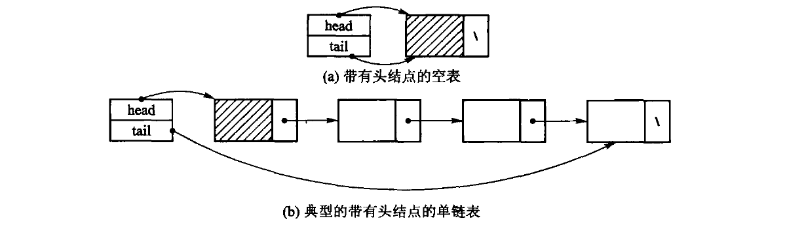
图 2.6 引入头结点的单链表：(a) 带头结点的空表，(b) 一个典型的带头结点的单链表。带阴影的那个结点就是头结点，它的数据域不算表中元素，只是为了让空表和表头不再是特例。
尾指针 tail_ 指向最后一个实际结点，空表时回指头结点， 所以 append 不需要从头寻找末尾，是 O(1)。
【代码2.7】单链表的类型定义。
见上面教学版清单的类头：三个成员——头结点、尾指针、长度。
【代码2.7结束】
#构析与循链定位
【算法2.8】带有头结点的单链表构造函数与析构函数。
教学版的构造函数 new 出头结点，析构函数先 clear() 掉全部真元素、再把头结点还回去。 clear() 沿 next 逐个循环释放，不是递归——链长十万级时递归释放会耗尽运行栈， 这一点第 3 章 3.1.3 有实测数字。
两处一漏就出事，教学版的测试各有一条断言盯着：
clear()之后tail_必须退回头结点。不退，下一次append就写进已释放的内存， AddressSanitizer 报heap-use-after-free。- 析构里那句
delete head_不能漏。漏了，每个链表对象泄漏一个结点， LeakSanitizer 会报。
【算法2.8结束】
【算法2.9】寻找链表的第 i 个结点。
定位从头结点开始逐步走 next，不新建任何结点，O(n)。原书的 setPos(-1) 是处理 头结点的技巧；教学版不暴露 -1 这个特殊位置，predecessor_at(0) 直接返回头结点。
返回"前驱"而不是"结点本身"，是因为插入和删除都要改前驱的 next—— 单链表从一个结点走不回它的前一个。一个函数同时服务两处，这是头结点带来的简化。
【算法2.9结束】
#所有权工具怎么选
读到这里会有一个很自然的疑问：既然现代 C++ 有 std::unique_ptr，为什么 clear() 还在手写 delete？把 next 声明成 std::unique_ptr<Node> 不是更省事吗——没有 delete，没有析构函数，五法则一条都不用写。
小规模下这么写确实看不出问题。代价藏在编译器替你生成的析构里：
/// **教学反例。** 用 `std::unique_ptr` 把结点串成链，看起来最干净：没有 `delete`，
/// 没有析构函数，五法则一条都不用写。
///
/// 代价藏在编译器替你生成的析构里：`~RecursiveNode` 要析构 `next`，`next` 的析构又要
/// 析构它的 `next`……链有多长，栈就压多深。链表通常正是「元素很多」的结构，
/// 于是一次普通的析构就能把栈压穿——而且崩溃阈值随优化级别变，debug 崩、release 过。
///
/// 实测数字与复现命令见本单元的 `legacy.md`。
struct RecursiveNode {
int value = 0;
std::unique_ptr<RecursiveNode> next;
};
class RecursiveChain {
public:
void push_front(int value) {
auto node = std::make_unique<RecursiveNode>();
node->value = value;
node->next = std::move(head_);
head_ = std::move(node);
++size_;
}
[[nodiscard]] std::vector<int> to_vector() const {
std::vector<int> out;
for (const RecursiveNode* cursor = head_.get(); cursor != nullptr;
cursor = cursor->next.get()) {
out.push_back(cursor->value);
}
return out;
}
[[nodiscard]] std::size_t size() const noexcept { return size_; }
private:
std::unique_ptr<RecursiveNode> head_;
std::size_t size_ = 0;
// 析构函数是编译器生成的——问题就出在这里：它是递归的，而且看不见。
};~RecursiveNode 要析构 next，next 的析构又要析构它的 next——链有多长，栈就压多深。而链表恰恰是「元素很多」的结构。本机 8 MB 栈上实测：
| 构建档 | 最大安全结点数 | 崩溃于 |
|---|---|---|
-O0 -g |
约 57,625 | 58,601 |
-O2 |
约 523,329 | 524,306 |
两档差了九倍。这才是最难受的地方：同一份代码，debug 下五万多个结点就段错误，release 下五十多万才崩。学生在 debug 里调出段错误，切到 release 又复现不了。递归深度不该由优化级别决定。
自己管所有权，多写一个析构和一个 clear()，换来的是栈深度与链长无关：
void clear() noexcept {
NodeBase* current = head_.next;
while (current != nullptr) {
NodeBase* following = current->next;
delete static_cast<Node*>(current);
current = following;
}
head_.next = nullptr;
tail_ = &head_;
size_ = 0;
}同样 -O0，五百万个结点一次段错误都没有。这几行不是仪式，是这个结构能不能处理大数据的分界线。
但这不等于「本书不用智能指针」。 判据是结构形态，不是个人偏好：
| 结构形态 | 该用什么 | 理由 |
|---|---|---|
| 链（结点串成一条线） | 裸指针 + 迭代释放 | unique_ptr 的析构是递归的，深度正比于链长 |
| 树（孩子唯一所有权） | unique_ptr |
释放同样递归，但深度是 O(log n)；第 11 章的 B+ 树、第 12 章的 Trie 用的就是它 |
| 一整块缓冲区 | 裸 T* + 五法则 |
换成 unique_ptr<T[]> 只省掉一句 delete[]——它只能移动，拷贝构造仍须手写，五法则并没有消失（见 2.2.1） |
| 共享（一个结点多个父） | 手写引用计数 | unique_ptr 语义上不成立；12.2 的广义表要教的正是「谁来回收」 |
code/ch02/ownership 把两种写法并排放着，复现命令和完整数字在该目录的 legacy.md。写工程代码时默认用智能指针是对的；本书在少数几处不用，是因为那几处的所有权本身就是要教的内容，而且换过去有可测的代价。
#插入与删除
【算法2.10】插入单链表的第 i 个结点。
教学版的 insert(pos, value) 分两步：① 循链找到 pos 的前驱，O(n)； ② 改两条链接，O(1)。
这就是链表与顺序表的分工：顺序表的 insert 不用找（下标直接算）， 但要搬 O(n) 个元素；链表不搬任何元素，但要走 O(n) 步去找。 两者的 O(n) 是不同的东西——一个在搬数据，一个在走指针。
append 单列一个函数而不是转调 insert(size_)，正是因为有 tail_： 尾插不需要定位，直接接在 tail_ 后面，O(1)。转调 insert 就白白退化成 O(n) 了。 插在表尾时 tail_ 必须跟着往后挪，教学版的测试有一条专门验它。
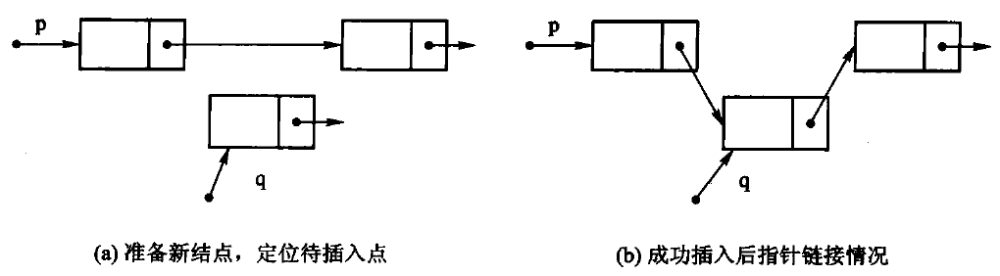
图 2.7 插入示意：新结点的 next 先接上前驱原来的后继（图中的 ①），再把前驱的 next 改指向新结点（②）。两步的次序不能反——先改前驱就再也找不到原来的后继了。
【算法2.10结束】
【算法2.11】单链表的删除算法。
删除同样是「定位前驱 → 改一条链接」，但有两件事不能漏：
- 被删结点必须
delete，只摘链不释放就是内存泄漏； - 删的若是尾结点，
tail_必须回退到前驱。不回退，下一次append就写进已释放的内存——教学版的测试用「删到空表再 append」把这条钉死了， 去掉那两行，AddressSanitizer 立刻报heap-use-after-free。
位置不合法统一抛 std::out_of_range，容器不打印任何提示。
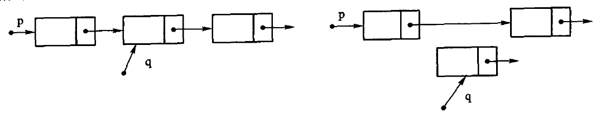
图 2.8 删除示意：左边是删除前，p 是前驱、q 是待删结点；右边是把 p->next 跨过 q 之后的样子。q 这时已经脱链，但内存还在，必须 delete 掉。
【算法2.11结束】
#2.3.2 双链表
#双链结点
【代码2.12】双链表的结点定义和实现。
双链结点比单链结点多一根 prev。多出来的那个指针（64 位机上 8 字节） 只买到一件事，但这件事很值：已知一个结点时，删除它是 O(1)。 单链表要做同一件事得先从头走到它的前驱，O(n)——因为单链表从一个结点走不回前一个。
原书在此只给出结点定义，没有给出完整的双链表算法。
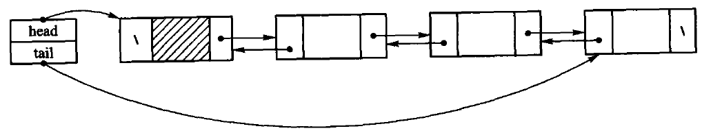
图 2.9 加入表头结点的双链表。带斜线阴影的是头结点；head 指向表首，tail 指向表尾。
图 2.10 双链表的结点：一个数据域，两根指针——prev 指前驱，next 指后继。
【代码2.12结束】
【本书补充实现】完整的双链表。
// 双链表 DoublyLinkedList —— 教学版。原书【代码2.12】的双链结点。
//
// 一个文件、一个类、能直接编译运行，给「第一次读这一节」的人看。
//
// 双链表比单链表每个结点多存一根 `prev`。多出来的空间买到的是一件事：
// **已知结点位置时，插入和删除都是 O(1)**——不必像单链表那样先循链找前驱。
// 这是本节唯一值得多花那份空间的理由，全部教学内容都围绕它。
//
// 与 modern.hpp（工程版）的分工：
// 教学版 三法则，插入/删除各写成一段直白的改链；
// 工程版 补齐移动语义，并把「表头 / 表中 / 表尾」三种情形合并进一个
// insert_before(pos)——省代码，但初读时那几个 nullptr 分支很绕。
// 两份都在闸门里真编译真运行。先读这一份，2.3a「进阶（选读）」再读那一份。
#pragma once
#include <cstddef>
#include <stdexcept>
template <typename T>
class DoublyLinkedList {
private:
// 双链结点：数据 + 前驱链接 + 后继链接。
struct Node {
T value;
Node* prev;
Node* next;
};
public:
using value_type = T;
using size_type = std::size_t;
DoublyLinkedList() : head_(nullptr), tail_(nullptr), size_(0) {}
~DoublyLinkedList() { clear(); }
// 三法则：这个类管着一串 new 出来的结点，拷贝必须自己写。
DoublyLinkedList(const DoublyLinkedList& other)
: head_(nullptr), tail_(nullptr), size_(0) {
for (Node* source = other.head_; source != nullptr; source = source->next) {
push_back(source->value);
}
}
DoublyLinkedList& operator=(const DoublyLinkedList& other) {
if (this == &other) {
return *this;
}
clear();
for (Node* source = other.head_; source != nullptr; source = source->next) {
push_back(source->value);
}
return *this;
}
bool empty() const { return size_ == 0; }
size_type size() const { return size_; }
void clear() {
Node* current = head_;
while (current != nullptr) {
Node* dying = current;
current = current->next;
delete dying;
}
head_ = tail_ = nullptr;
size_ = 0;
}
// 表头插入，O(1)。要改的链接一共三处：新结点的 next、原表头的 prev、head_。
void push_front(const T& value) {
Node* fresh = new Node;
fresh->value = value;
fresh->prev = nullptr;
fresh->next = head_;
if (head_ != nullptr) {
head_->prev = fresh;
} else {
tail_ = fresh; // 原来是空表，新结点同时也是表尾
}
head_ = fresh;
++size_;
}
// 表尾插入，O(1)。与 push_front 完全对称。
void push_back(const T& value) {
Node* fresh = new Node;
fresh->value = value;
fresh->prev = tail_;
fresh->next = nullptr;
if (tail_ != nullptr) {
tail_->next = fresh;
} else {
head_ = fresh; // 原来是空表，新结点同时也是表头
}
tail_ = fresh;
++size_;
}
T pop_front() {
if (empty()) {
throw std::out_of_range("DoublyLinkedList::pop_front: 表空");
}
return erase_node(head_);
}
T pop_back() {
if (empty()) {
throw std::out_of_range("DoublyLinkedList::pop_back: 表空");
}
return erase_node(tail_);
}
// 在位置 pos 插入。定位仍是 O(n)——双链表省掉的是「找前驱」，不是「找位置」。
void insert(size_type pos, const T& value) {
if (pos > size_) {
throw std::out_of_range("DoublyLinkedList::insert: 位置非法");
}
if (pos == 0) {
push_front(value);
return;
}
if (pos == size_) {
push_back(value);
return;
}
Node* successor = node_at(pos); // 新结点要插在它前面
Node* predecessor = successor->prev; // O(1)：prev 现成的，不用循链
Node* fresh = new Node;
fresh->value = value;
fresh->prev = predecessor;
fresh->next = successor;
predecessor->next = fresh;
successor->prev = fresh;
++size_;
}
T erase(size_type pos) { return erase_node(node_at(pos)); }
const T& at(size_type pos) const { return node_at(pos)->value; }
T& at(size_type pos) { return node_at(pos)->value; }
// 迭代器：一根被包起来的结点指针。双链表的迭代器可以 `--`，单链表的不行——
// 这也是那根 prev 买到的东西。
class Iterator {
public:
explicit Iterator(Node* node) : node_(node) {}
T& operator*() const { return node_->value; }
Iterator& operator++() {
node_ = node_->next;
return *this;
}
Iterator& operator--() {
node_ = node_->prev;
return *this;
}
bool operator!=(const Iterator& other) const { return node_ != other.node_; }
private:
Node* node_;
};
Iterator begin() { return Iterator(head_); }
Iterator end() { return Iterator(nullptr); }
private:
// 摘掉一个已知的结点，O(1)。**这是双链表的看家本领**：
// 单链表要做同一件事，得先从头走到它的前驱，O(n)。
T erase_node(Node* node) {
T value = node->value;
if (node->prev != nullptr) {
node->prev->next = node->next;
} else {
head_ = node->next; // 删的是表头
}
if (node->next != nullptr) {
node->next->prev = node->prev;
} else {
tail_ = node->prev; // 删的是表尾
}
delete node;
--size_;
return value;
}
Node* node_at(size_type pos) const {
if (pos >= size_) {
throw std::out_of_range("DoublyLinkedList: 下标越界");
}
Node* current = head_;
for (size_type i = 0; i < pos; ++i) {
current = current->next;
}
return current;
}
Node* head_;
Node* tail_;
size_type size_;
};三处值得停一下：
- 插入和删除都要同时改两侧链接。少改一根，表在正向遍历时看起来完全正常， 只有反着走或者删中间结点时才炸。教学版的测试因此正着走一遍、倒着走一遍， 断言两个结果互为逆序——漏掉
successor->prev = fresh;这一条就红。 - 首尾是特例，但只有两个：插入时若新结点成了表头/表尾，
head_/tail_要跟着改； 删除时若删掉的是表头/表尾，同样要改。四个分支写清楚就没有别的坑了。 - 迭代器可以
--。单链表的不行。这也是那根prev买到的东西。
原书用两幅图讲清了这四根指针怎么改。删除 p 所指结点，要同时接好前驱和后继两条链：
p->prev->next = p->next;
p->next->prev = p->prev;
p->next = NULL; p->prev = NULL; delete p;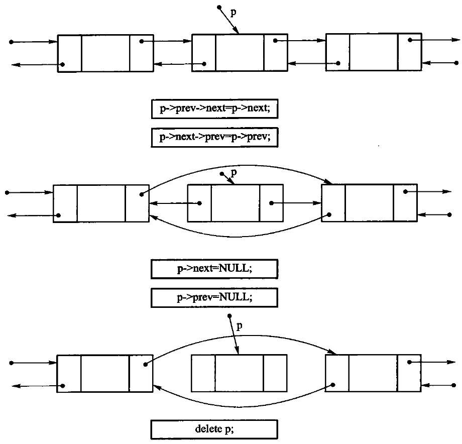
图 2.11 双链表的删除操作示意。摘链之后把 p 自己的两根指针置空再释放，是为了让「已删除的结点还被别人拿着」这种错误尽早暴露。
在 p 之后插入新结点 q，先让 q 认好左右邻居，再让邻居认 q：
q->prev = p; q->next = p->next;
p->next = q; q->next->prev = q;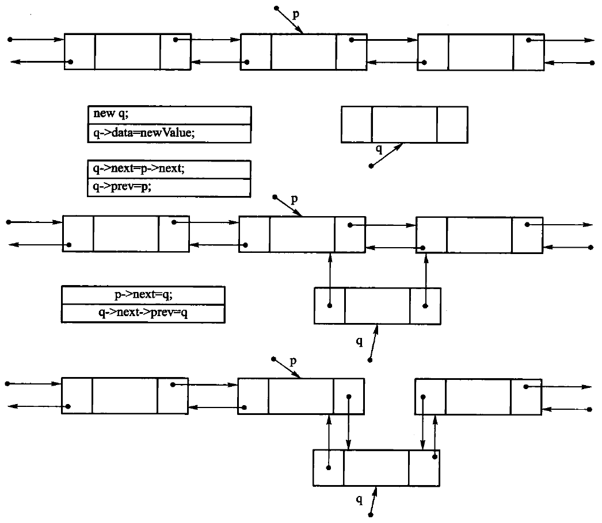
图 2.12 双链表插入操作示意。四条赋值的次序可以变，但「先让新结点指向两侧、再改两侧指向新结点」这个方向不能反——否则改到一半就丢了原来的后继。
双链表比单链表多一根指针的空间开销，换来的是给定元素时能在 O(1) 时间内找到它的前驱。
【本书补充实现结束】
#2.3.3 循环链表
循环链表把尾结点的 next 接回首结点，因而没有 nullptr 作为终点。它适合轮转调度、循环缓冲区等“处理完最后一个又回到第一个”的场景。空表仍用 tail == nullptr 表示；非空时首结点是 tail->next。
原书举的例子是进程轮转：多个进程在一段时间内访问同一个资源，为了让每个进程公平分享，把它们串成一个环，用一个 current 指针指向下一个要激活的进程，指针往前走一步就轮到下一个。
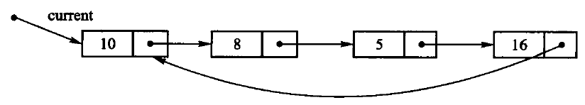
图 2.13 循环链表示意图。current 指向将要激活的结点，走一圈回到自己。
只要把单链表最后一个结点的 next 指回表首，就得到循环链表；不多花任何存储，却让「从任一结点都能访问到其余全部结点」成为可能。
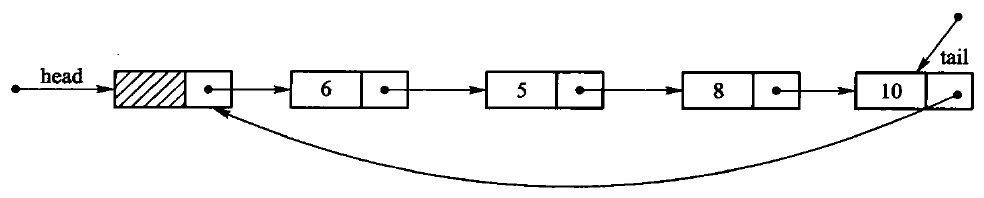
图 2.14 带头结点的循环链表示意图。
把双链表的首尾也接起来，就是循环双链表，反向遍历同样闭合。
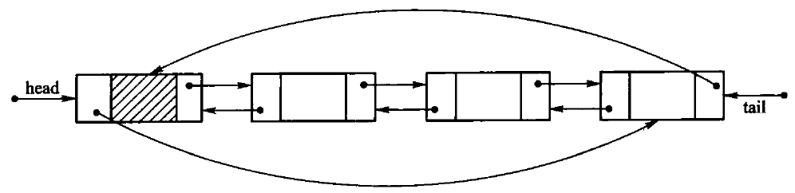
图 2.15 循环双链表示意图。
只保存 tail 就够了：取首结点是 tail->next，尾插只需改两根链接，均为 O(1)。从任意结点开始遍历时必须保存起点，并在再次遇到起点时停止，不能写成“走到 nullptr 为止”。删除最后一个结点后要把 tail 清空；删除首结点则把 tail->next 跳过被删结点。循环双链表再把首结点的 prev 接到尾结点，反向遍历同样闭合。
循环链表的代价是边界更容易写错：空表、单结点表和多结点表的链接规则不同。测试至少应覆盖三种长度，并验证从每个结点出发恰好走一整圈；否则漏接或误接都可能表现为无限循环。
#2.3a 进阶（选读）：从教学版到工程版
这一节可以整节跳过。 工程版（code/ch02/linked_list/modern.hpp 与 code/ch02/doubly_linked_list/modern.hpp）在教学版之上补三件事。
一、头结点不再存 T。 教学版的头结点是一个完整的 Node，里面那个 value 从头到尾没人用——代价是 T 必须可默认构造。工程版把结点拆成两层：
/// 带头结点、尾指针的单链表。
///
/// 原书的 `setPos(-1)` 返回头结点；本实现把这个实现细节留在 predecessor_at，
/// 对外位置统一为 [0, size()]。按值查找返回 optional，位置错误抛 out_of_range。
template <typename T>
class LinkedList {
// 头结点只保存链接，不保存 T：哨兵不代表元素，因此不要求 T 默认构造。
// Node 继承 NodeBase 后，定位和接链逻辑只需操作 next，结点布局也不重复。
struct NodeBase {
NodeBase* next{nullptr};
};
struct Node final : NodeBase {
T value;
template <typename U>
explicit Node(U&& item, NodeBase* successor = nullptr)
// 完美转发保留左值拷贝、右值移动两条路径，避免无谓的 T 临时对象。
: NodeBase{successor}, value(std::forward<U>(item)) {}
};
public:
using value_type = T;
using size_type = std::size_t;NodeBase 只有链接域，头结点用它；真正存数据的 Node 继承它。 于是头结点不含 T，LinkedList<不可默认构造的类型> 也能用了。 代价是链上走的是 NodeBase*，取值时到处要写 static_cast<Node*>：
void clear() noexcept {
NodeBase* current = head_.next;
while (current != nullptr) {
NodeBase* following = current->next;
delete static_cast<Node*>(current);
current = following;
}
head_.next = nullptr;
tail_ = &head_;
size_ = 0;
}这是一次实打实的交换：多一层继承和一堆强制转换，换 T 少一条约束。 教学版选了前者，工程版选了后者。
二、拷贝到一半失败时要自己收拾。 构造函数抛出时，这个对象的析构函数不会运行—— 它还没构造完，语言不认为它存在。所以工程版的拷贝构造把循环包进 try/catch， 失败时先 clear() 掉已经接上的半截链再重新抛出。教学版没有这一段。
三、移动语义、[[nodiscard]]、noexcept。 与 2.2a 说过的完全一样，不再重复。
双链表这边，工程版还把「表头 / 表中 / 表尾」三种插入情形合并进一个 insert_before(pos)——省代码，但初读时那几个 nullptr 分支很绕：
template <typename U>
Node* insert_before(Node* pos, U&& value) {
// 先构造结点；构造失败时原链完全未改变。
Node* inserted = new Node(std::forward<U>(value));
inserted->next = pos;
inserted->prev = pos != nullptr ? pos->prev : tail_;
if (inserted->prev != nullptr) {
inserted->prev->next = inserted;
} else {
head_ = inserted;
}
if (pos != nullptr) {
pos->prev = inserted;
} else {
tail_ = inserted;
}
++size_;
return inserted;
}T erase_node(Node* node) {
if (node == nullptr) throw std::out_of_range("DoublyLinkedList: empty");
T value = std::move(node->value);
if (node->prev != nullptr) node->prev->next = node->next;
else head_ = node->next;
if (node->next != nullptr) node->next->prev = node->prev;
else tail_ = node->prev;
delete node;
--size_;
return value;
}工程版的测试覆盖头/中/尾插入、删尾后的尾指针修复、深拷贝、移动、元素构造异常和 move-only 元素；变异自检还确认"删尾不回退 tail"会在后续尾插崩溃， "复制构造失败不清理"会留下元素对象。原书逐条证据见 code/ch02/linked_list/legacy.md。
#2.4 线性表实现方法的比较
顺序表是最简单的数据组织方法，因此大多数程序设计语言都提供了数组这种机制来实现它。除具有 易用、空间开销较小等特点之外，顺序表还提供了对任意元素进行随机访问的能力，适合于二分 检索及快速排序等运算，是存储静态数据的理想选择。按下标访问是 O(1)，代价是插入删除要搬动 后续元素，平均 O(n)。
链表除了适用于频繁插入或删除内部元素的线性表之外，还适合于管理那些长度经常变化、或事先 无法确定长度的线性表。它在已知前驱结点时插入删除是 O(1)，但按位置找到那个前驱仍是 O(n)。
作为基本的数据结构，线性表有着广泛的应用：存储管理本质上就是利用线性表管理可利用空间 （第 12 章）；线性表还可以作为基本成分构建复杂的数据结构，例如散列方法就是把顺序表和链表 结合起来的一种数据结构（第 10 章）。在实际应用中具体采用何种实现方法，取决于应用中线性表 数据元素的统计特征和操作特点。取舍时有两个因素值得注意。
1. 不要使用顺序表的场合。 线性表中经常要插入/删除内部元素时，不宜使用顺序表，因为顺序 表的插入/删除操作平均情况下需要移动表中一半的元素。此外，无法确定线性表长度的最大值时， 也不宜采用顺序表。
2. 不要使用链表的场合。 经常对线性表进行按位置的访问，而且按位读操作比插入/删除操作 频繁时，不宜使用链表，因为顺链表扫描浏览比按顺序表下标读元素要费时。此外，指针本身的 存储开销也需要考虑：如果与结点内容所占空间相比，指针所占的比例较大（超过 1:1），应该慎重 选择。
#本章小结
本章在介绍线性表基本概念和抽象数据类型的基础上，描述了线性表的两种实现方法。
线性结构是最简单且最常用的一种数据结构，其基本特点是结构中的元素之间满足线性关系，按这个 关系可以把所有元素排成一个线性序列。线性表是由若干数据元素组成的有限序列，是一种比较简单的 数据结构；线性表通常有顺序和链式两种存储方式，在两种存储结构上，线性表各运算的实现效率各有 千秋。
顺序表是组织数据的最简单方法，具有易用、空间开销较小以及对元素随机访问等特点，是存储静态 数据的理想选择。而链表不仅可以适用于那些频繁增删结点的应用，还适用于处理事先无法确定长度的 线性表。 具体选哪一种，看访问统计和操作特点。
#习题
- 设顺序表 a 中的数据元素递增有序，试设计一个算法，将 x 插入到顺序表的适当位置，以保持该 表的有序性。
- 设 A=(a1,⋯,am) 和 B=(b1,⋯,bn) 均为顺序表，A' 和 B' 分别为 A 和 B 中 除去最大共同前缀后的子表。若 A'=B'= 空表，则 A=B；若 A'= 空表而 B'≠ 空表，或者 两者均不为空表且 A' 的表首元素小于 B' 的表首元素，则 A<B；否则 A>B。试写一个比较 A、B 大小的算法。
- 设线性表中的数据元素以值递增排列，并以单链表作为存储结构。设计一个高效的算法，删除表中 所有值大于 min 且小于 max 的元素，同时释放被删除结点的空间，并分析算法的时间复杂度。
- 假设有两个按元素值递增有序排列的线性表 A 和 B，均以单链表作为其存储结构。试设计一个 算法，将 A 和 B 归并成一个按元素值递减有序排列的线性表 C，并要求利用原表（即表 A 和 表 B）的结点空间构造表 C。
- 已知由一个链表表示的线性表中含有三类字符的数据元素（字母字符、数字字符和其他字符），试设计 一个算法，将该线性链表分割为 3 个循环链表，其中每个循环链表中均只含一类字符。
- 试设计一个算法，删除一个顺序表中从第 i 个元素开始的 k 个元素。
- 已知线性表中元素以值递增有序排列，并以单链表作为存储结构。试设计一个算法，删除表中值相同 的多余元素，使得操作后表中的所有元素值均不相同，同时释放被删除的结点空间。
- 已知两个元素按值递增有序排列的线性表 A 和 B，且同一表中的元素值各不相同。试构造一个 线性表 C，其元素为 A 和 B 中元素的交集，且表 C 中的元素也按值递增有序排列。设计对 A、B、C 都是顺序表时的算法。
- 要求同第 8 题。设计当 A、B、C 都是单链表时的算法。
- 设表达式以字符形式已存入数组 E[n] 中，
#为表达式的结束符，试设计判断表达式中括号(和)是否配对的算法。
#上机题
- 试设计一个非递归算法，在 O(n) 时间内将一个含有 n 个元素的单链表逆置，要求其辅助空间为 常量。
- 给定一个单向链表，试设计一个既节省时间又节省空间的算法来找出该链表的倒数第 m 个元素。 实现这个算法，并对可能出现的特殊情况做相应处理。自行设计链表的数据结构。（「倒数第 m 个 元素」的含义：当 m=0 时，链表的最后一个元素将被返回。）
- 设有 n 个人围坐在一个圆桌周围，现从第 s 个人开始报数，数到第 m 的人出列，然后从出列的 下一个人重新开始报数，数到第 m 的人又出列，如此反复直到所有的人全部出列为止。Josephus 问题是：对于任意给定的 n、s、m，求出按出列次序得到的 n 个人员的序列。试在计算机上 模拟 Josephus 问题的求解过程。